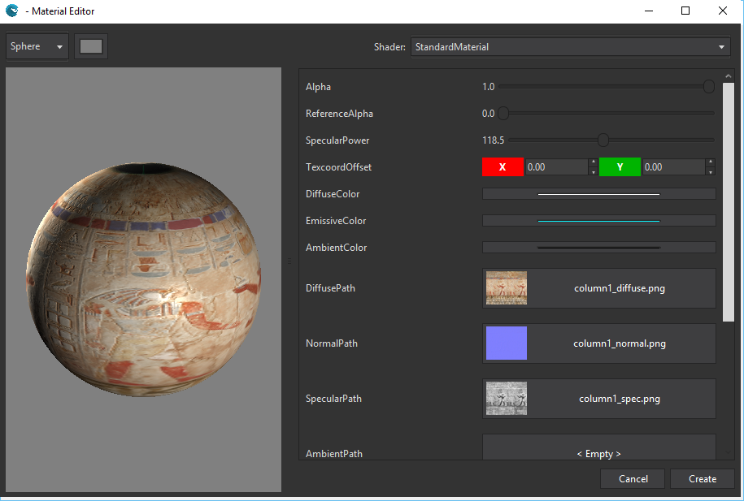
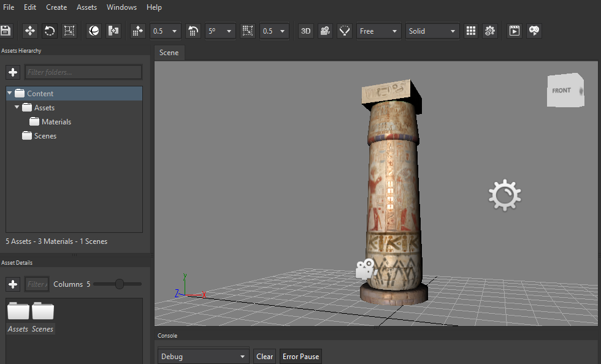
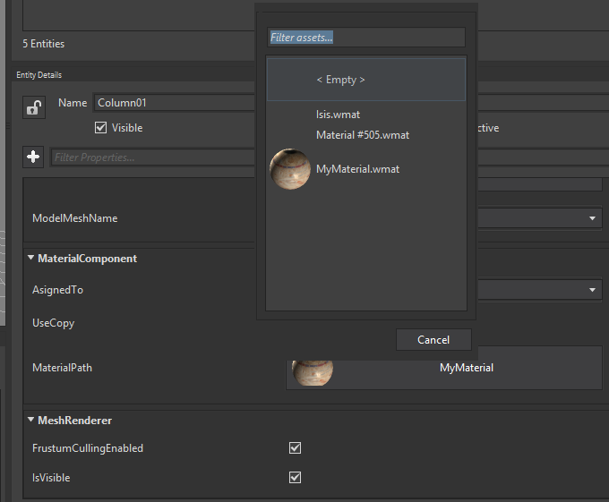

Goal
Have you ever wondered how to add a material to an existing model? A material comprises the details of what an object should look like (for example: its color and whether it is dull or shiny). However, a texture is just an image which is dumped into the model's mesh.
Wave Engine allows textures to influence materials in various ways, such as altering their colors. Multiple textures can interact with each other to produce interesting effects.
Note that textures have to be attached to materials to affect models, you cannot apply a texture to a model without a material.
Hands-on
With Wave Visual Editor
On the Asset Details panel, double click on Assets folder:

Right click on the pane and select Create Material option. Material Editor window will be opened to specify material properties. You can modify these properties as you need and see the changes in the left preview detail.

Once Wave Visual Editor has loaded the new material, simply drag the item from the Asset Details panel and drop it in the Viewport, just on top of the existing model.

Also, you can achieve the same through MaterialPath property, from entity's MaterialComponent component:

With Visual Studio (for Windows or Mac)
From Wave Visual Editor, click on File > Open C# Solution...; and rebuild it just to update WaveContent.cs. It will contain the paths to the assets you have previously added in the Editor.
Modify CreateScene() method from your scene to instantiate a new StandardMaterial:
protected override void CreateScene()
{
this.Load(WaveContent.Scenes.MyScene);
var material = new StandardMaterial()
{
SpecularPower = 116.4f,
DiffuseColor = Color.AntiqueWhite,
EmissiveColor = Color.MediumTurquoise,
DiffusePath = WaveContent.Assets.Textures.column1_png,
NormalPath = WaveContent.Assets.Textures.column1_normal_png,
SpecularPath = WaveContent.Assets.Textures.column1_spec_png,
EmissivePath = WaveContent.Assets.Textures.column1_emissive_png
};
}
You can add this material now to any model setting the MaterialsMap.DefaultMaterial property:
var model = new Entity()
.AddComponent(new Transform3D())
.AddComponent(new MaterialsMap()
{
DefaultMaterial = material
})
.AddComponent(new Model(WaveContent.Assets.Models.column1_fbx))
.AddComponent(new ModelRenderer());
this.EntityManager.Add(model);
Even further, a material created visually from the Editor can be set through DefaultMaterialPath property:
var model = new Entity()
.AddComponent(new Transform3D())
.AddComponent(new MaterialsMap()
{
// Notice here the difference regarding previous snippet
DefaultMaterialPath = WaveContent.Assets.MyMaterial
})
.AddComponent(new Model(WaveContent.Assets.Models.column1_fbx))
.AddComponent(new ModelRenderer());
this.EntityManager.Add(model);
Wrap-up
You have learned the difference between textures and materials, and how to add those both visually and through source code.
Note
Take a look to all the Materials Samples they show a lot of functionality about materials.